Custom-painted sneakers with a powerful dragon-inspired design that transforms a classic low-top silhouette into wearable artwork. The entire upper is wrapped in a richly detailed scale pattern, hand-painted in layered shades of emerald green, deep forest green, and golden yellow—depth, movement, and a lifelike reptilian texture. Every scale is individually outlined for a dimensional, armored look. A hand-painted dragon stretches across the side panels and flows onto the midsole: serpentine body, wings with motion, tail wrapping heel to toe for one unified scene. The toe box features an ornamental dragon emblem in swirling green, gold, and black; white panels beneath the artwork add crisp contrast. The palette blends vibrant greens, moss tones, yellow accents, and clean white with small golden details; bright yellow laces add energy. A subtle heart detail on the heel softens the fierce fantasy aesthetic with a personal touch. Set on a chunky white sole for structure and contrast, every angle is customized—no plain side. Ideal for lovers of fantasy art, dragons, statement fashion, and one-of-a-kind custom footwear—handcrafted art to stand out and bring bold mythical energy into everyday style.
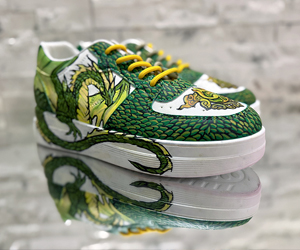
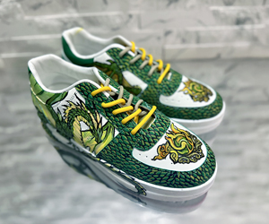
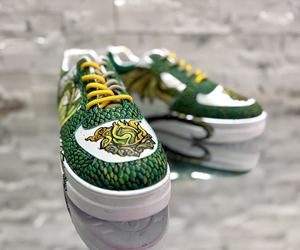
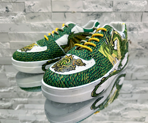
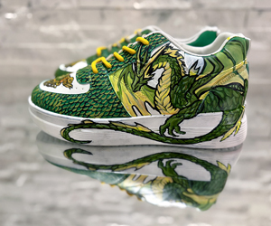
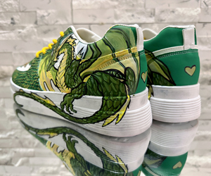
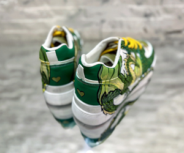
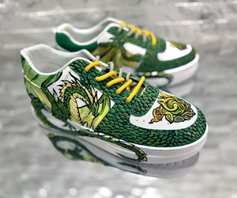
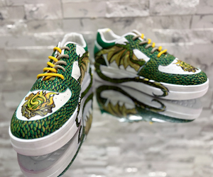
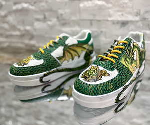
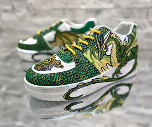
Stunning custom pointed-toe stilettos in a rich deep berry or burgundy tone with a velvety suede-like finish—romantic, theatrical, and highly imaginative. The silhouette is elegant and sharp: slim high heels, refined pointed front, and graceful ankle straps that frame the foot beautifully. Delicate mesh panels combined with curved strap detailing across the sides create a light, airy effect while keeping the design sophisticated and polished. The centerpiece is the butterfly embellishment: multicolored butterflies in lavender, violet, sky blue, mint green, blush pink, and warm orange flutter across the toe box, ankle area, sides, and heel counter, making the design feel alive. The contrast between the dark wine-colored base and the bright, dreamy butterfly tones gives a fantasy-garden feel—like a couture fairytale or enchanted spring collection. From the back, a clean zipper closure keeps the shape neat and fitted; from the side, the arch and heel look graceful and feminine, while the butterflies soften the stiletto with something playful and poetic. Wearable art for someone who wants to make a statement and embrace beauty in a bold, creative way—original, expressive, and unmistakably one-of-a-kind.
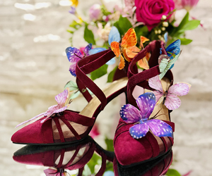
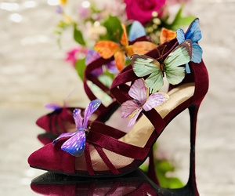
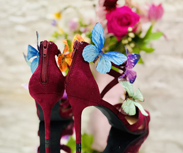
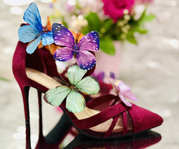
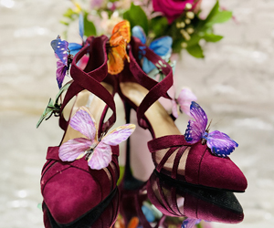
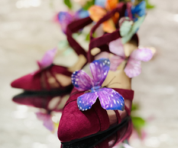
Custom emerald green high-heeled sandals with a romantic, fantasy-inspired design—theatrical, elegant, and unmistakably handmade. Slim stiletto sandals with an open toe, broad vamp strap, and mostly open sides create a light, delicate silhouette; the tall, narrow heel gives a lifted, refined look. The upper is a rich emerald satin or velvety fabric with glossy satin ribbons that catch the light. The ankle and heel treatment is the dramatic focus: sculptural heel counters from which long emerald satin ribbons spill into oversized bows and rosette-like knots, with trailing ends for movement and a couture, ballet-meets-fairy-tale quality. The front is decorated with butterfly-like jeweled embellishments, clustered beadwork resembling leaves or botanical bursts, and coordinated jeweled clusters—adding sparkle and a nature-inspired theme. Jewel-toned emerald green shifts from deep and velvety to bright and reflective. Wearable art for photoshoots, special events, fantasy editorials, themed bridal styling, or collectors of one-of-a-kind fashion.
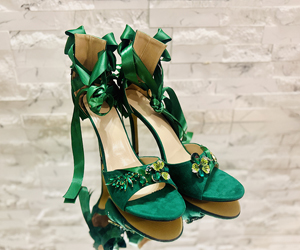
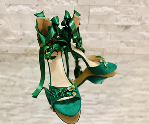
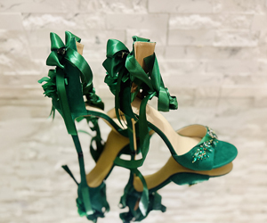
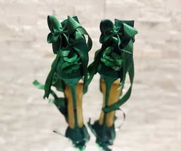
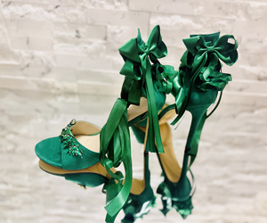
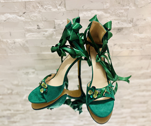
Highly ornate, fantasy-inspired pointed-toe stiletto heels with a dramatic, handcrafted look. The base is deep emerald or blackened green satin with a subtle sheen; the silhouette is elegant and sharp: closed pointed toe, d’Orsay-style side cut, and slim high stiletto heel, with a thin ankle strap and round gold buckle. The toe box has a small sculptural green satin bow or flower-like ribbon; along the outer edge, gold vine-like trim set with tiny green beads or crystal-like stones runs like jeweled ivy. The heel counters are decorated with gold floral metalwork, leaf motifs, and small flower clusters, topped with a large oval green gem. Multiple green feathers hang from the back and sides for motion and a theatrical, nature-inspired feel; fine gold chains connect the jewel and floral elements for a jewelry-like finish. A blend of couture evening wear, enchanted forest fairy aesthetic, botanical jewelry design, and bridal or costume statement footwear—opulent, magical, almost elven art shoes for a special event, photoshoot, or themed bridal look.
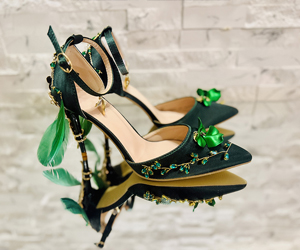
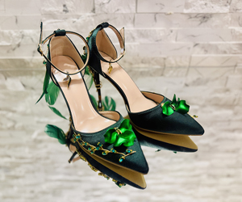
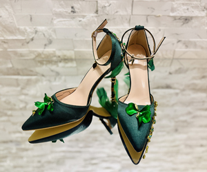
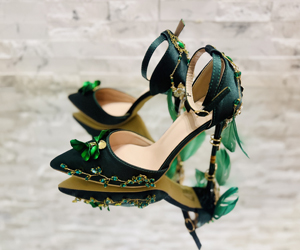
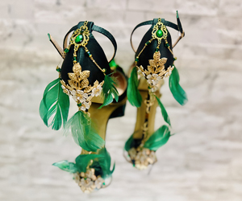
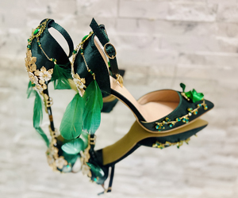
Custom high-heeled knee-high boots transformed into a dramatic, fantasy couture piece with strong magical-girl and celestial elegance—Guardian of the Midnight Prism. Crafted in deep midnight-blue with a subtle satin-leather sheen that catches the light for a moonlit glow; sleek pointed toe and ultra-slim stiletto heels create a sharp, elegant silhouette that feels both powerful and delicate. Hand-applied embellishments: intricate floral embroidery in beads, sequins, and textured appliqués spreads like enchanted vines along the shaft. Dark blue crystals and jewel clusters frame the toe; soft light-blue ribbons and lace bows around the upper calf add contrast and magical transformation aesthetics. Ornate gold bow ornaments at the back, pale gold interior sole, and dangling crystal details and chains give movement and luxury. Fantasy couture, magical-girl inspired, romantic yet powerful—handcrafted statement footwear.
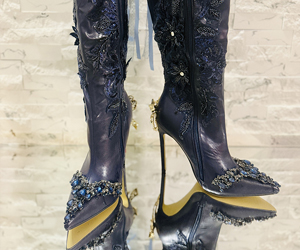
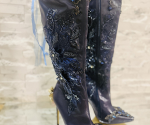
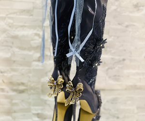
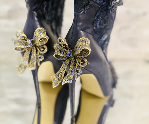
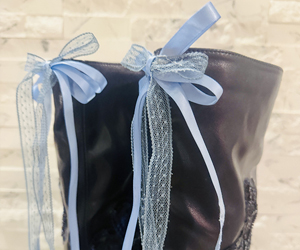
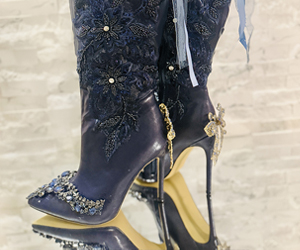
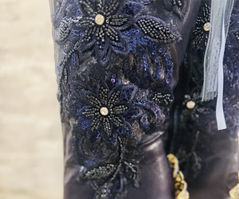
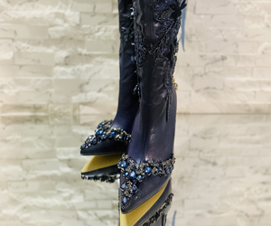
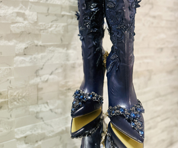
Ornate, fantasy-inspired custom high-heeled boots that blend couture fashion with a fairy-garden aesthetic. Crafted in deep emerald green with a glossy crocodile-texture finish for a luxurious, mystical look; sleek pointed toe and very high stiletto heels create an elegant, dramatic silhouette. The surface is richly decorated with hand-applied floral elements—layered green fabric flowers, sparkling crystals, beads, and jewel embellishments arranged like blooming vines climbing along the boot. Gold chains and delicate leaf ornaments drape across the upper section; oversized satin bows cascade down the back of the shaft. Sculpted roses and pearl accents near the heel and ankle, with metallic leaf details on the pointed toe, complete the nature-inspired design. Wearable art fusing botanical fantasy, haute couture craftsmanship, and springtime enchantment.
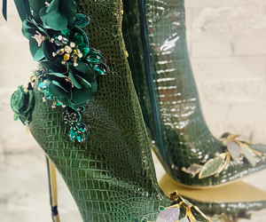
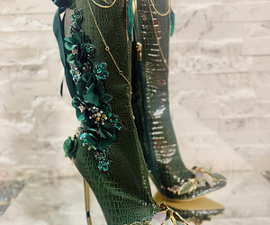
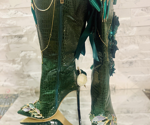
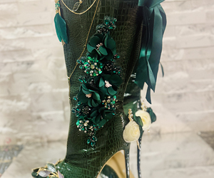
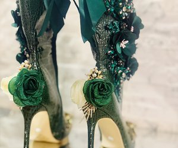
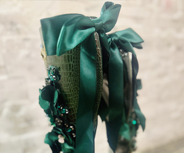
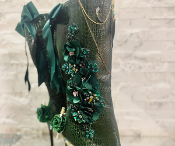
Custom athletic-style sneakers with a bold splatter-paint aesthetic, combining sporty structure with expressive, street-art inspired decoration. The base palette of black, white, and bright red creates a strong, high-contrast look. Red and black paint splatters applied across panels give a dynamic graffiti or abstract action-painting vibe, with layered splashes suggesting intentional artistic composition. Low-profile athletic sneakers with a sleek, performance-oriented silhouette; white cushioned sole and streamlined tongue enhance the modern design. Bold, edgy, and expressive—a statement sneaker for casual wear, creative environments, or fashion-forward styling where action painting meets urban streetwear.
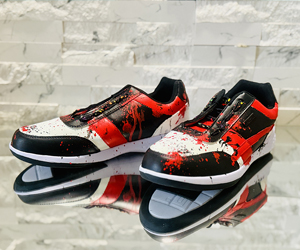
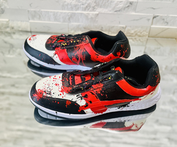
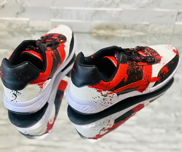
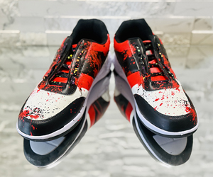
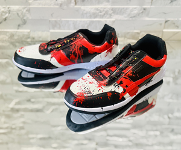
Custom couture-style black knee-high boots with a dramatic gothic-romantic aesthetic. Tall knee-high boots with slim, elegant shafts feature pointed toes and high stiletto heels. The design combines intricate black lace fabric layered over matte leather, floral appliqués with butterfly/flower-like shapes, decorative gold-toned chains and medallion elements, hanging feather charms, and long black satin ribbon bows. This theatrical, artistic statement footwear showcases Victorian-inspired couture elegance with a fashion-forward, gothic elegance that transcends everyday boots.
Elegant black dress shoes with refined decorative embellishments. Featuring romantic floral appliqués, delicate bow accents, and intricate lace overlays that create a vintage-inspired, couture aesthetic perfect for formal occasions and evening wear.
Custom high-heel boots with a dramatic, couture-style aesthetic. Featuring intricate lace and embroidered overlays with floral patterns, draped chain strands with bead-like drops and a striking red gem accent, elegant satin ribbon bow details, and layered fabric flowers. This gothic-elegant design combines romantic lace, jewelry-like embellishments, and a dramatic silhouette, creating a statement fashion piece that showcases handcrafted artistry.
Fun, youthful streetwear-inspired sneakers featuring colorful emoji-themed decorations. The dark base showcases vibrant smiley-face graphics in neon colors—yellow, pink, blue, orange, and green—with a mix of printed designs and raised plastic emoji charms. A prominent yellow winking tongue-out emoji charm serves as the main focal point, while a red strip along the sole edge and light-colored laces complete this playful, pop culture-inspired design.
Hand-painted custom sneakers with a strong artistic, painterly aesthetic—wearable artwork that combines streetwear with fine-art painting. The shoe upper features expressive brush-stroke painting with vivid colors (blues, oranges, yellows, reds, and greens) that blend dynamically, creating a canvas-painting effect. A stylized winged figure or abstract character on the side panel suggests a narrative artistic theme, while rhinestone-like elements on the laces and a hand-painted heart symbol on the back add personal, customized touches to this art-driven design.
Custom white sneakers featuring hand-painted fitness-themed illustrations. Clean white low-top sneakers with a minimalist silhouette showcase a muscular torso illustration lifting dumbbells, rendered in a semi-realistic painted style. Soft gray cloud-like brushwork surrounds the figure, creating a dramatic, stylized background that emphasizes strength, bodybuilding, and gym culture. The white laces and thick white sole keep the overall look simple so the artwork stands out, creating a personalized, sporty artistic design that combines casual footwear with illustrative art.
Hand-painted custom sneakers designed as wearable artwork, combining illustrative portrait art with abstract color composition. One shoe features a stylized female face with blue hair painted in an expressive, semi-illustrative style, while the other showcases bold flowing color bands in reds, oranges, and yellows set against deep blue. Rich cobalt/indigo blues with paint splatter effects create a night-sky or cosmic background, while light turquoise edging and sparkly rhinestone-like laces add fashion-glam accents that contrast beautifully with the painterly art style.